—Works114 in the register
Every work, and what it costs.
Prices are the maker's own. MADART Foundation takes no commission and is not a party to the sale: an enquiry goes straight to the maker, and the number you see is the number they receive. Where a collective shows, the proceeds go to the maker of the work in the same way.
This register holds the work of the makers we curate. The studios and brands that help make Maison d’Artiste possible show their own work in the house; it is not listed here.
We aim to keep work under €5,000 — the point at which buying a piece can still be a decision made on feeling rather than on advice. It is a guideline for the programme, not a ceiling on what a maker may ask.


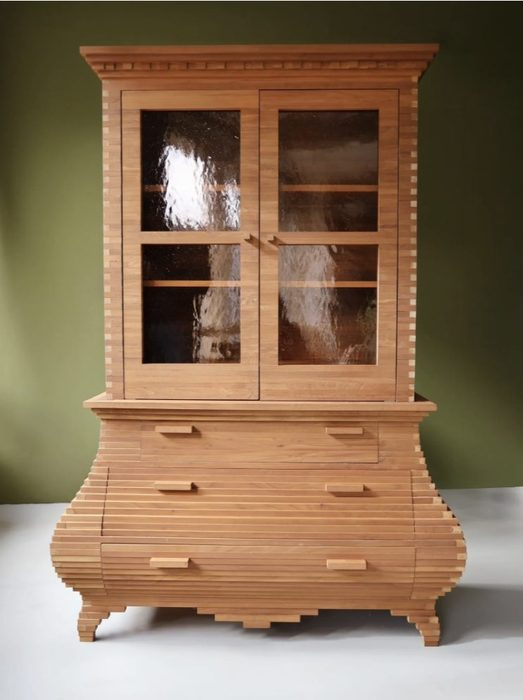
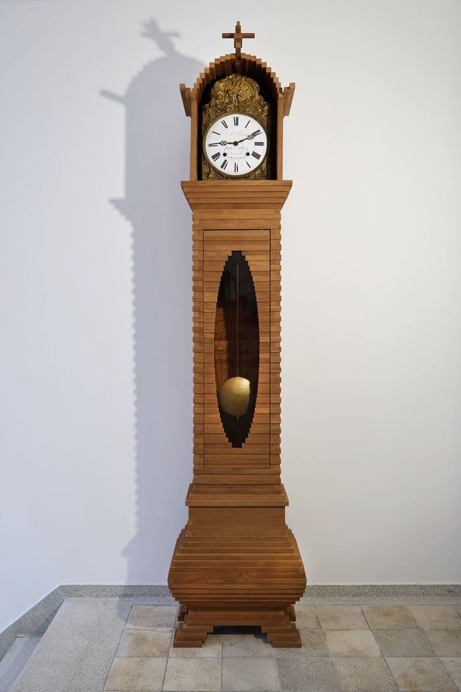


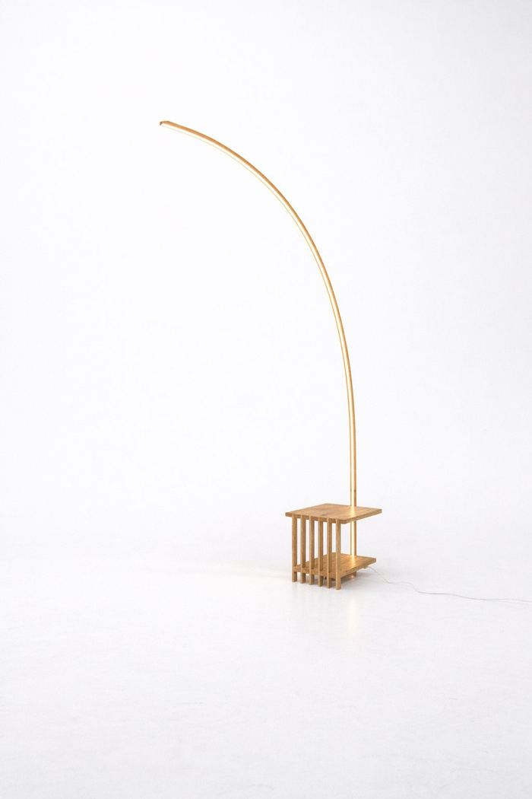
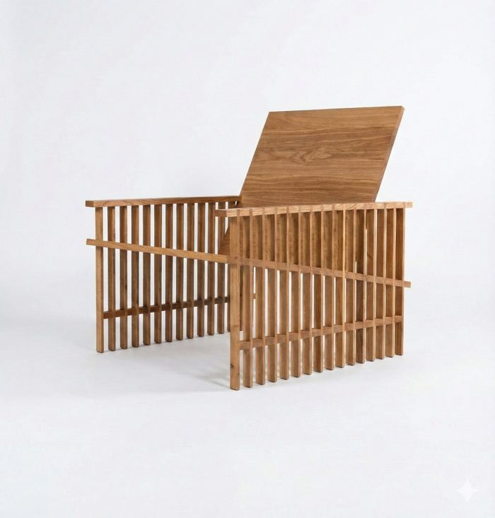
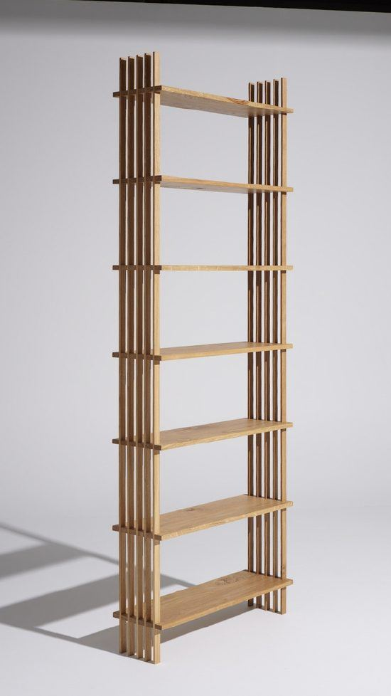


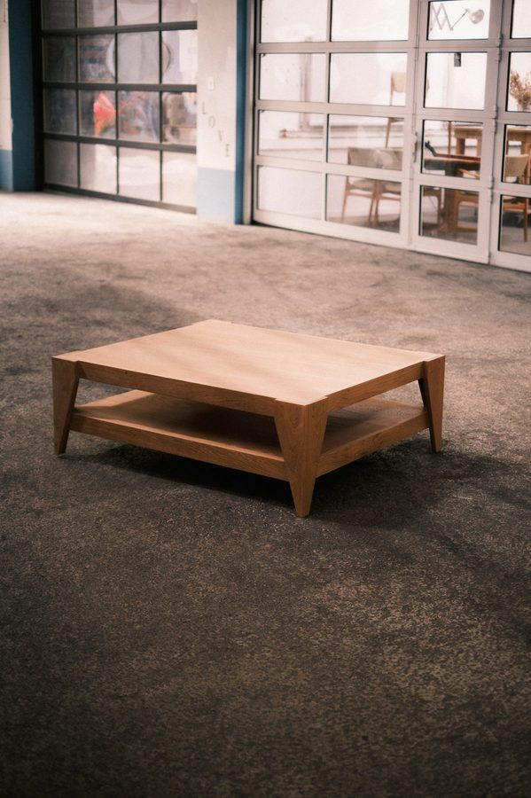
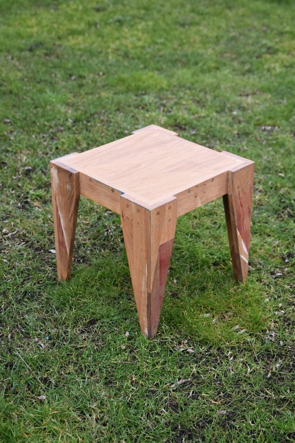
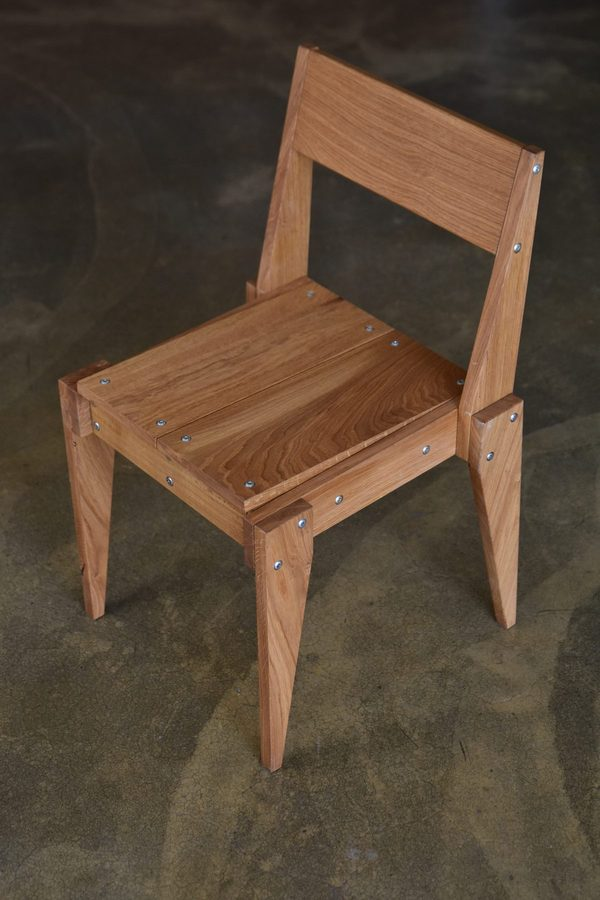


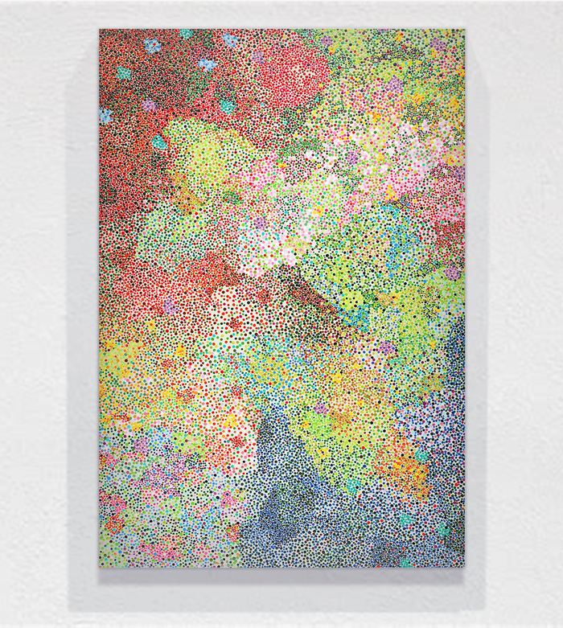
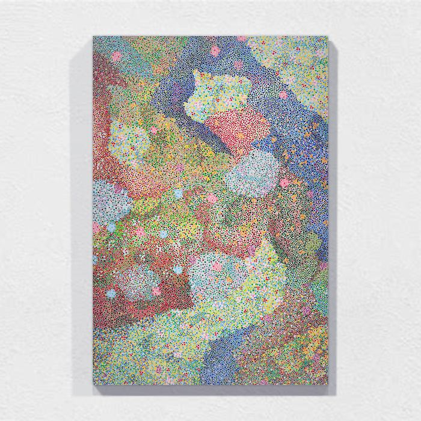
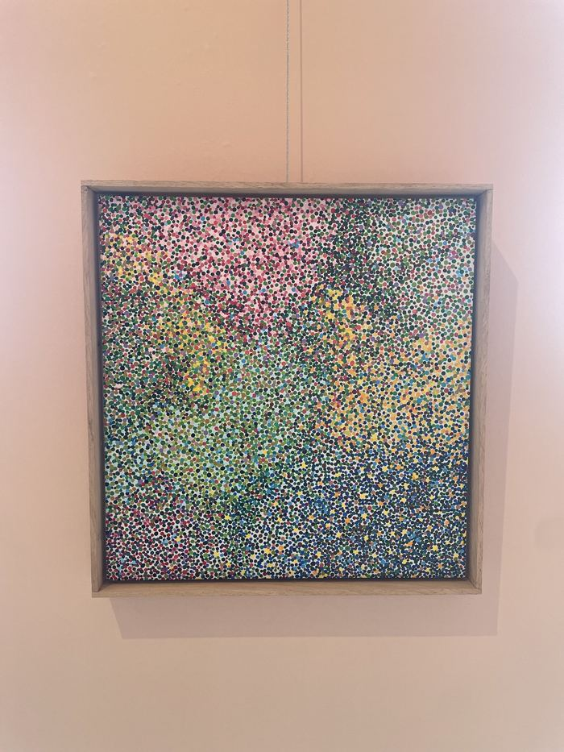
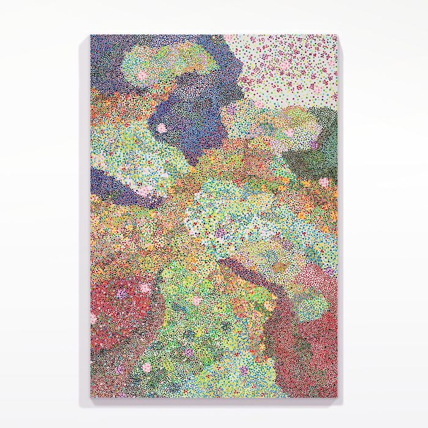


No works match that. Try a broader filter.